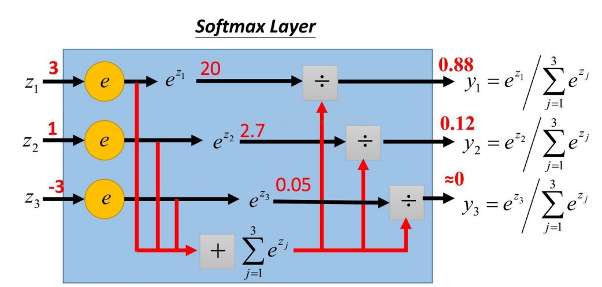
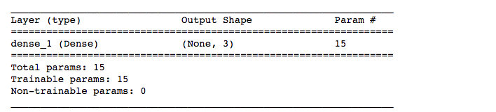
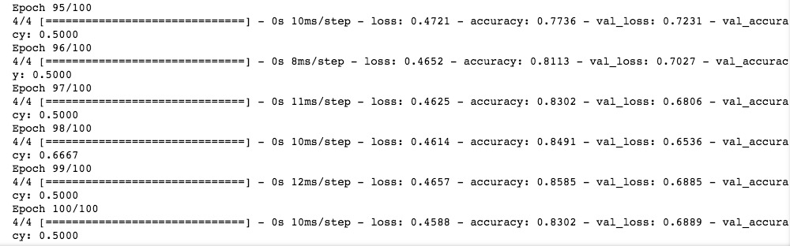

4.训练模型
4.1 建立模型
我们在处理鸢尾花的 二分类 问题时采用的是 线性模型 + sigmoid 函数作为分类器的模型结构。现在我们处理多分类的问题，仍然沿用同样的思路，基础模型使用 线性模型 ,更换分类器为 softmax。
softmax 函数能将一个含任意实数的K维向量 压缩 到另一个K维实向量中，使得每一个元素的范围都在(0,1)}之间，并且所有元素的和为1。在多分类中，通常用来将 线性结果 转化为在对应分量的 概率 。工作原理如下图：

图片来源：李宏毅老师在 2016 年台湾资料科学年会上发布课程《一天搞懂深度学习》
在keras中搭建模型，填加一个核心网络层 Dense 即可。在Dense中，参数unit代表输出的维度，参数input_dim代表输入的维度。
我们需要输入4维向量（四个特征），输出3维向量（3种类别的 one-hot 编码
选中 3.1 搭建模型 单元格，插入新的代码单元格，输入以下代码：
model = tf.keras.Sequential()
model.add(tf.keras.layers.Dense(units=3, input_dim=4,activation="softmax"))
model.summary() # 查看模型结构
运行后可以得到模型的摘要：

4.2 编译模型
我们选用多分类交叉熵（categorical_crossentropy）作为损失函数，随机梯度下降 （sgd）作为优化器来编译我们的模型，增加准确率 作为评估模型的标准。
继续插入新的代码单元格，输入模型编译的语句：
# 编译模型
model.compile(loss='categorical_crossentropy', optimizer='sgd',metrics=['accuracy'])
运行该单元格。
4.3 训练模型
从训练集中，分割出25%作为 验证集 ，在训练的过程中，同时观察 验证集 上 loss函数 和 准确率 的变化。
在 导包 代码下面，添加两个超参数 epochs=100 和 validation_split=0.25，完整的超参数代码如下：
## 超参数
epochs=100
validation_split=0.25
test_size=0.25
运行。
点击 3.3 训练模型 单元格，插入新的代码单元格，输入训练模型的语句：
# 训练模型
history = model.fit(X_train,y_train,validation_split=validation_split,epochs=epochs)
最后5次的训练的结果为：

参考文献
1.Cross entropy https://en.wikipedia.org/wiki/Cross_entropy